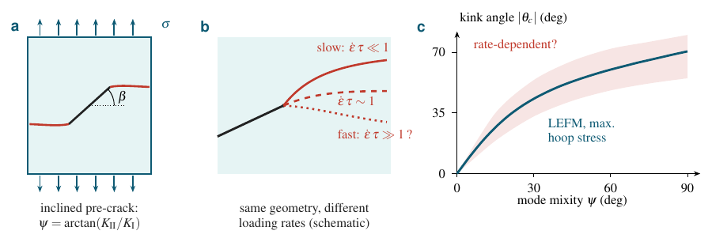
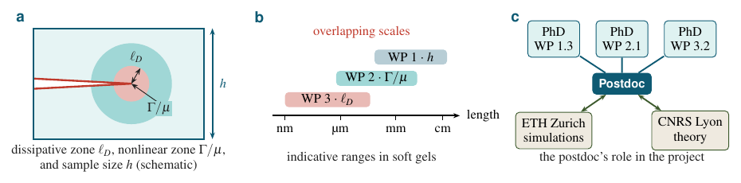

Projects & Funding
Our research on the mechanics of soft interfaces is organized around several funded projects. Open positions on these projects are listed under Openings.

Viscocrack
Crack path prediction and control in nonlinearly viscoelastic materials.
Tough hydrogels, elastomers, and soft tissues are increasingly built into medical devices and soft robots, yet we cannot reliably predict where a crack in such a material will go. Viscocrack attacks this through four coordinated aims — materials development at EPFL, phase-field modeling at UCLA, and experiments at Aix-Marseille Université on how nonlinearly viscoelastic cracks select their paths under mixed-mode loading, and on steering cracks by patterning the material with light.
Funding: SNSF–NSF Lead Agency Grant 219301 (786 kCHF), ending August 2028. Partners: UCLA (L. Jin), EPFL Soft Materials Laboratory (E. Amstad), IRPHE (M.-J. Dalbe).

The Hierarchy of Scales
The hierarchy of scales in the fracture of soft and slender bodies.
Whether and how a soft solid breaks depends on several length scales at once: the thickness of the body, the nonlinear-elastic zone near the crack tip, and the region over which energy is dissipated. In soft materials these scales can be comparable, so classical fracture theories — which assume their strict separation — break down. The project addresses each scale in a dedicated work package, combining experiments at Aix-Marseille Université with simulations at ETH Zurich and analytical theory in Lyon.
Funding: SNSF Project Grant 236406 (750 kCHF), 2025–2029. Partners: ETH Zurich (D. Kammer), CNRS Lyon (M. Adda-Bedia). An international workshop on soft fracture will be held at Monte Verità (Ascona) in November 2027.
Cornstarch fracture
Fracture and failure of dense cornstarch suspensions.
[Placeholder — please provide a short description of this project and a representative image. I've left the layout ready so the text and figure drop straight in.]
Funding: to be added.